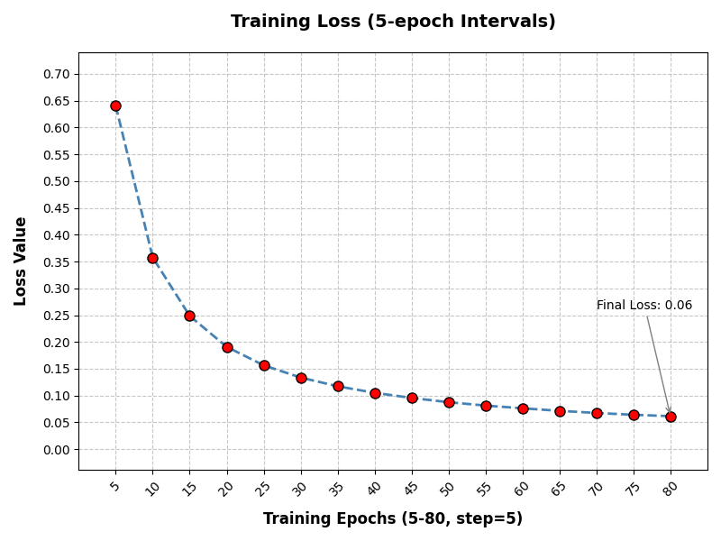
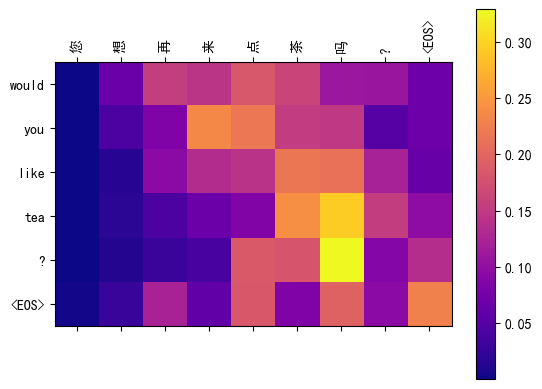
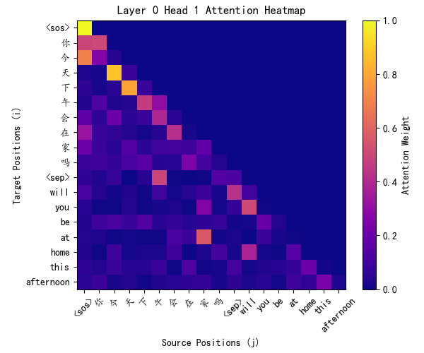
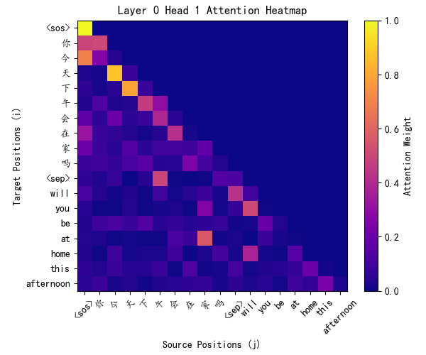
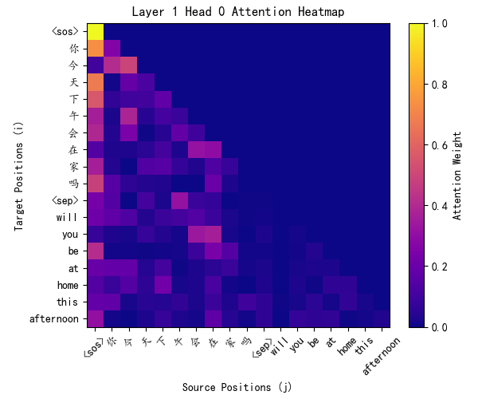
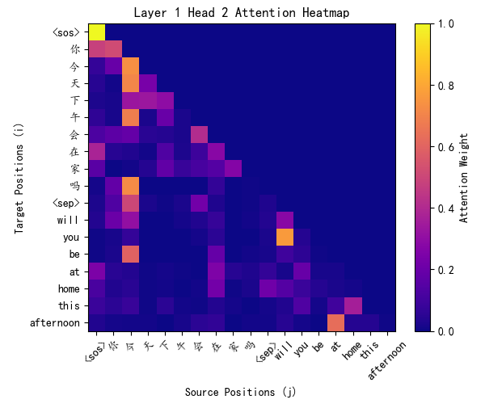
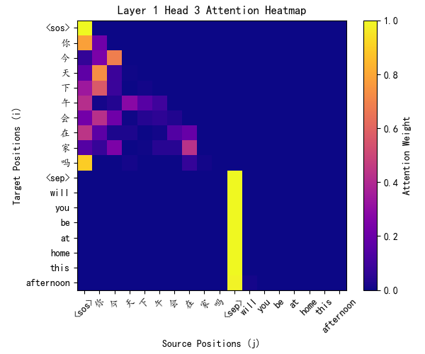

MDS5122 Deep Learning And Its Application Assignment 2
Guyuan Xu 224040074
Part A: seq2seq
1. Load and process the dataset
Build text pairs list:
We want to clean the raw data set and build a list of Chinese-English text pairs for future processing, for example
[('嗨。', 'Hi.'),
('你好。', 'Hi.'),
('你用跑的。', 'Run.'),
('住手！', 'Stop!'),
('等等！', 'Wait!'),
('等一下！', 'Wait!'),
('开始！', 'Begin.'),
...
Randomly split the text-pairs list to train-test splits
train_test_split(pairs, test_size=0.1, shuffle=True, random_state = 1234)
Tokenize all text:
The core of processing is to tokenize Chinese and English texts, we
- split all English sentence into words and take lower case, for example:
How are you today? ['how', 'are', 'you', 'today']
- split all Chinese sentence into words, but treat simplified and traditional chinese as different words, for example:
今天天氣真好 ['今','天', '天', '氣','真','好']
Creates 2 vocabulary mapping for characters/tokens in bilingual text pairs seperately
- Assign unique IDs to new tokens.
- Add predefined tokens like
<pad>(padding),<sos>(start-of-sequence),<eos>(end-of-sequence), and<unk>(unknown token) to handle out-of-vocabulary words during eval (inference). - Example:
# Chinese # English
{'<UNK>': 2, {'<UNK>': 2,
'這': 3, 'there': 3,
'裡': 4, 'used': 4,
'以': 5, 'to': 5,
'前': 6, 'be': 6,
'是': 7, 'an': 7,
'座': 8, 'old': 8,
'舊': 9, 'temple': 9,
... ....
Converts raw text words into numerical IDs using the prebuilt vocabulary
- ID Mapping: Replaces each token with its corresponding ID from
vocab. If a token is not found, it uses the ID of<unk>. - Example:
'今天天气不好'['今','天','天','气','不','好'][1210, 438, 438, 109, 30, 7]
Building Dataset and DataLoader to feed the model
- We want to convert the Chinese-English text pairs to id pairs
['我 會 再 試 一 次 。', 'i will try it again'][12, 16, 17, 18, 19, 20, 11], [11, 14, 15, 16, 17] - Appending
<EOS>id1to the end to tell the model this is the end of text. - Then pad ids pair to fixed length (here we have fixed length = 45) since the model always take fixed length as input:
(tensor([12, 16, 17, 18, 19, 20, 11, 1, 0, 0, 0, 0, 0, 0, 0, 0, 0, 0,
0, 0, 0, 0, 0, 0, 0, 0, 0, 0, 0, 0, 0, 0, 0, 0, 0, 0,
0, 0, 0, 0, 0, 0, 0, 0, 0]),
tensor([11, 14, 15, 16, 17, 1, 0, 0, 0, 0, 0, 0, 0, 0, 0, 0, 0, 0,
0, 0, 0, 0, 0, 0, 0, 0, 0, 0, 0, 0, 0, 0, 0, 0, 0, 0,
0, 0, 0, 0, 0, 0, 0, 0, 0]))
Note: we did not use BPETokenizer or other pre-defined tokenizer for tokenizing, we build our own tokenizer (words to ids mapping)
2. Implement a seq2seq model with attention using PyTorch
We copy the codes PyTorch Tutorial
3. Train the network starting from random initialization
Loss curve:
we record traing loss every 5 epochs, we have total 80 epochs.

Model translation: 10 examples from test set:
input: 您 想 再 来 点 茶 吗 ？
target: would you like some more tea ?
model: would you like tea ? <EOS>
input: 她 的 故 事 是 真 的 吗 ？
target: was her story true ?
model: is her story true story <EOS>
input: 比 我 想 象 中 的 更 简 单 。
target: that was easier than i thought it would be
model: i want less than i remember <EOS>
input: 湯 姆 問 了 幾 個 問 題 。
target: tom asked a few questions
model: tom bought questions <EOS>
input: 我 家 附 近 有 一 個 公 園 。
target: there is a park near my house
model: near my house <EOS>
input: 我 想 要 一 些 新 鲜 的 鸡 蛋 。
target: i want some fresh eggs
model: i want new <EOS>
input: 你 是 从 哪 个 国 家 来 的 ？
target: what country are you from ?
model: when are your country ? <EOS>
input: 这 个 城 市 人 口 众 多 。
target: the city has a large population
model: two men <EOS>
input: 永 远 别 再 提 它 了 。
target: don t ever mention that again
model: never want it again <EOS>
input: 汤 姆 开 始 唱 歌 。
target: tom started singing
model: tom started to sing <EOS>
Example of Attention weights HeatMap
We copy the visualization codes PyTorch Tutorial, with few modification to adapt to Chinese texts.

We input "would you like tea?" to model, and the model translate it to "您想再来点茶吗？", which is a fairly exact translation, except the redundant "再".
Part A: GPT
1. Load and process the dataset
In GPT context, we deal with text data differently:
- we first build a single word-id vocabulary for all Chinese/English words together
- then adding special tokens like
<EOS>, <SOS>, <SEP>to the vocabulary and assign ids to them, example:
{'<pad>': 0,
'<sos>': 1,
'<eos>': 2,
'<sep>': 3,
'嗨': 4,
'hi': 5,
'你': 6,
'好': 7,
'用': 8,
'跑': 9,
'的': 10,
...
-
We concat Chinese-English pair into 1 sequence and mark start/sep/end positions with speical tokens
<EOS>, <SOS>, <SEP>, example:<SOS>你最好休息一下。<SEP>You'd better relax a bit.<EOS> -
convert all words into ids
Expected convertion:
('你最好休息一下。', "You'd better relax a bit.")<SOS>你最好休息一下。<SEP>You'd better relax a bit.<EOS>[1, 6, 1110, 7, 936, 937, 17, 18, 3, 2069, 1754, 568, 365, 899, 2] -
Build
sourceandtargetsequence for training: shift right by 1 position, then pad tomax_length = 128, example:
(src, tgt) =
(tensor([ 1, 6, 1110, 7, 936, 937, 17, 18, 3, 2069, 1754, 568,
365, 899, 0, 0, 0, 0, 0, 0, 0, 0, 0, 0,
0, 0, 0, 0, 0, 0, 0, 0, 0, 0, 0, 0,
0, 0, 0, 0, 0, 0, 0, 0, 0, 0, 0, 0,
0, 0, 0, 0, 0, 0, 0, 0, 0, 0, 0, 0,
0, 0, 0, 0, 0, 0, 0, 0, 0, 0, 0, 0,
0, 0, 0, 0, 0, 0, 0, 0, 0, 0, 0, 0,
0, 0, 0, 0, 0, 0, 0, 0, 0, 0, 0, 0,
0, 0, 0, 0, 0, 0, 0, 0, 0, 0, 0, 0,
0, 0, 0, 0, 0, 0, 0, 0, 0, 0, 0, 0,
0, 0, 0, 0, 0, 0, 0, 0]),
tensor([ 6, 1110, 7, 936, 937, 17, 18, 3, 2069, 1754, 568, 365,
899, 2, 0, 0, 0, 0, 0, 0, 0, 0, 0, 0,
0, 0, 0, 0, 0, 0, 0, 0, 0, 0, 0, 0,
0, 0, 0, 0, 0, 0, 0, 0, 0, 0, 0, 0,
0, 0, 0, 0, 0, 0, 0, 0, 0, 0, 0, 0,
0, 0, 0, 0, 0, 0, 0, 0, 0, 0, 0, 0,
0, 0, 0, 0, 0, 0, 0, 0, 0, 0, 0, 0,
0, 0, 0, 0, 0, 0, 0, 0, 0, 0, 0, 0,
0, 0, 0, 0, 0, 0, 0, 0, 0, 0, 0, 0,
0, 0, 0, 0, 0, 0, 0, 0, 0, 0, 0, 0,
0, 0, 0, 0, 0, 0, 0, 0]))
2. Build and Implement a minimal GPT network
We tried minGPT from Karpathy, codes and eval example of our implementation can be found at dl-hw2-code/mingpt/mingpt-runnable.ipynb
We also build a GPT from scratch, below results are from the GPT we built from scratch (hereinafter referred to as "GPT")
3. Train the network starting from random initialization
Loss curve:
we record traing loss every 5 epochs, we have total 80 epochs.

Model translation: 10 examples from test set:
Note:
>: input Chinese text
=: target translation
<: model translation
> 电视遥控器在沙发下面。
= The TV remote control is under the couch.
predict ends
< tv remote control is under the couch
====================
> 我要控告你。
= I will sue you.
predict ends
< i want to show you
====================
> 忘了今天的事儿吧。
= Let's forget about what happened today.
predict ends
< lets forget about what happened today
====================
> 我没有抓到他演讲的重点。
= I didn't get the point of his speech.
predict ends
< i didnt get the point of his speech
====================
> 语言是人们与他人交流的手段。
= Language is the means by which people communicate with others.
predict ends
< language is the means by which others quality
====================
> 汤姆是个护士。
= Tom was a nurse.
predict ends
< tom is a nurse
====================
> 湯姆問我喜歡不喜歡巧克力。
= Tom asked me if I liked chocolate.
predict ends
< tom asked me if i liked chocolate
====================
> 他们亲吻了。
= They kissed each other.
predict ends
< they kissed each other
====================
> 狗在地毯上睡觉。
= The dog was sleeping on the mat.
predict ends
< the dog was sleeping on the mat
====================
> 我感觉好像死了一样。
= I felt like I was dead.
predict ends
< i felt like im dying a grip
====================
The accuracy of translation by GPT is obviously higher than that of seq2seq
Attention Weights of layer0 head 0-3 Visualization
 



Attention Weights of layer1 head 0-3 Visualization


What have I Learnt
-
How does
GPT basedmodel learn to translate from source language to target language without instruction fine-tuning?
The answer is by constructingsrc-tgtdata pairs. Because all the data we feed into the model is<sos>English<sep>Chinese<eos>, the model learn the patterns, so next time we input<sos>English<sep>to a trained GPT model, the model is able to output(predict) the missingChinese<eos>part. The format of the constructed dataset is itself aninstruction -
What does attention mean when we talk about visualizing attention?
By constructing a minimal GPT model from scratch, we learn the structure of the building block of GPT model: attention block, as well as the key component attention weights matrix (the attention we want to visualize) -- the lower triangular matrix by masking the upper triangular part of:
Note that this part is not multiplied by the Value matrix
Part B: Fine Tune Quantized Qwen/Qwen2.5-3B-Instruct With LoRA
In this part, we did not use LLaMA Factory, but attempt to fine tune model manually.
1. Load and process the dataset
The DISC-Law-SFT claims to have 403K entries of data, but in fact, there are only ~286K available for download, they are:
| Dataset | Task/Source | Size |
|---|---|---|
| DISC-Law-SFT-Pair | Legal information extraction | 32K |
| Legal event detection | 27K | |
| Legal case classification | 20K | |
| ... | ... | |
| DISC-Law-SFT-Triple | Legal judgment prediction | 16K |
| Legal question answering | 23K | |
| Total | 285.7K |
This dataset is messy, names are inconsistent, for example
each Task/Source has a unique id, for example, 'legal_question_answering_1' correspond to the 1st data of legal question answering task, but 'jud_read_compre-1' is the first element of Judicial examination
And DISC-Law-SFT-Pair has different structure from
-
DISC-Law-SFT-Triple, example:DISC-Law-SFT-Pairhas 3 keys:id, input, output:'input': '违章停车与违法停车是否有区别？', 'output': '对违反道路交通安全法律、法规关于机动车停放、临时停车规定的，可以指出违法行为...'}
-
DISC-Law-SFT-Triple,- has 4 keys:
id, reference, input, output:'reference': 《票据法》第二十二条：汇票必须记载下列事项：（一）表明"汇票"的字样..., 'input': '...某公司在向供应商付款时使用了一张汇票，但付款日期和付款地没有清楚、明确的记载在汇票上。供应商认为汇票无效，请问是否属实？', 'output': '根据《票据法》第二十二条，汇票必须清楚明确地记载付款日期和付款地等事项，...'}
- has 4 keys:
We process the 2 subset seperately, and convert raw data in the follow 'conversation' form:
from = human means user input (prompt)
from = gpt means model answer, here means the answer of Qwen2.5-3B-Instruct
{'conversations':
[{'from': 'human', 'value': '违章停车与违法停车是否有区别？'},
{'from': 'gpt', 'value': '对违反道路交通安全法律、法规关于机动车停放、临时停车规定的，可以指出违法行为，并予以口头警告...'}]}
Finally get a dataset with 285.7K entries
Dataset({
features: ['conversations'],
num_rows: 285781
})
Also, we randomly choose 1 question from each task category to evaluate the model performance before fine-tuning:
10 task categories from DISC-Law-SFT-Pair, ids for each category:
{'op_sum-', 'leg_ele_extra-', 'leg_case_cls-',
'legal_question_answering_',
'sim_case_match-', 'jud_read_compre-',
'jud_doc_sum-', 'leg_eve_detec-', 'exam-', 'sent_pred-'}
2 task categories from DISC-Law-SFT-Triple, ids for each category:
{'judgement_predit-', 'legal_question_answering_'}
2. Fine-tune the Qwen2.5-3B-Instrruct language model
Disclaimer
- Our original place was to use 90% of the data for fine-tuning, but we found there is a run-time limit for Kaggle free T4 x2 GPUs (as well as P100 GPU):
 Considering that using full data is just a matter of time, we decided to use only 10% (~31K), which is possible to finish in reasonable amount of time.
Considering that using full data is just a matter of time, we decided to use only 10% (~31K), which is possible to finish in reasonable amount of time.
- We did not use LLaMA Factory for finetuning but done it manually, check the ready-to-run notebook. In order to maximize training speed, we set the following 3 parameters:
num_train_epochs=1,
per_device_train_batch_size=4,
gradient_accumulation_steps=4,
per_device_train_batch_size set to be 4, hence GPU RAM-consuming.
(you should have at least 16GB CUDA RAM to run it without modifying the code, you can use Kaggle free GPU, check README.md)
Training Loss
Steps: how many time does the trainer update the weights, here we have 983 steps = data_size / (per_device_train_batch_size x device_num x gradient_accumulation_steps) = 27K / 32
Conclusion
We found that there is no obvious improvement to fine-tuning the base Qwen2.5-3B-Instrruct model: perhaps the base model is already good enough (check the following results, especially the model answer (pre fine-tuned)).
We then present the model answer before and after fine-tuned toghether with the corresponding question+answer, here are 5 typical examples:
| question_id | jud_read_compre-1 |
|---|---|
| Question | 请根据下面的案例描述对所提出的问题进行回答\n文本为：'经审理查明，2012年10月间，被告人兰x1伙同他人在烟台市芝罘区，使用虚假的购车合同、首付款收据、收入证明等材料，以办理购车贷款为由，通过烟台市祥海资产管理有限公司向中国工商银行股份有限公司烟台芝罘支行骗取贷款人民币19万余9，其用于购买黄金、手机等物品，后被告人兰x1变更个人联系方式，且未偿还贷款。2013年4月16日，被告人兰x1被抓获归案后，其亲属代其退赔了赃款人民币196000元。上述事实，被告人兰x1在开庭审理过程中亦无异议，且有被告人兰x1的供述，证人曲10、陈某等的证言，银行卡交易明细，虚假的购车合同、收款收据、贷款业务申请书等一宗，公安机关出具的扣押发还物品清单、羁押期间表现情况表、工作情况、户籍证明等证据证实，足以认定。'，问题为：'被告人骗取贷款的理由是什么？' |
| Answer | 办理购车贷款 |
| Model answer (pre-fine tune) | 根据提供的案例描述，被告人兰x1骗取贷款的理由是：以办理购车贷款为由，使用虚假的购车合同、首付款收据、收入证明等材料。具体来说，他声称是为了办理购车贷款，但实际上并没有买车，而是将骗取的贷款用于购买黄金和手机等物品。<|im_end|> |
| Model answer (fine-tuned) | 根据案件描述，被告人兰x1骗取贷款的理由是使用虚假的购车合同、首付款收据、收入证明等材料，并声称自己要办理购车贷款。他通过烟台市祥海资产管理有限公司向中国工商银行股份有限公司烟台芝罘支行申请贷款人民币19万9。所以，被告人骗取贷款的理由是提供虚假的文件材料，以办理购车贷款为借口来获取银行贷款。<|im_end|> |
| question_id | leg_case_cls-1 |
|---|---|
| Question | 以下文本反映了什么类型的风险\n投诉编号: 17349058626 投诉对象: 4399游戏 投诉问题: 客服不理人,不予退款,联系不到客服 投诉要求: 退款 涉诉金额: 22196元 投诉进度: 处理中2020年2月27日至2020年3月12日盗用父母软件进行4399游戏充值,期间2月份累计充值4399手机游戏5520元人民币,3月份累计充值4399网页游戏16676元人民币,因是未成年人其行为属于无民事行为能力人或者限制民事行为能力人,依照《民法总则》有关规定,无民事行为能力人这种情况下的民事主体实施行为的范围受到限制,只能由其法定代理人代理实施民事法律行为;限制民事行为能力人可以进行与他的年龄、智力相适应的民事活动;其他民事活动由他的法定代理人代理,或者征得他的法定代理人的同意.所以我希望贵公司给予退款 |
| Answer | 盗用风险 |
| Model answer (pre-fine tune) | 根据提供的信息，这段投诉文本反映的主要风险类型是消费者权益保护和未成年人保护。\n\n具体来说，投诉涉及以下几个方面的问题：\n1. 消费者权益受损：用户在未成年人的情况下进行了高额充值，但之后无法联系到客服，且客服拒绝退款。\n2. 未成年人保护：用户指出自己是未成年人，因此其充值行为可能不符合相关法律法规的规定。根据《民法总则》，未成年人在某些情况下需要由法定代理人代理其民事活动。\n\n从投诉内容来看，主要的风险点在于：\n- 退款问题：用户希望获得退款，但客服未予回应。\n- 未成年人权益保护：用户认为其作为未成年人，充值行为应受到特别保护，希望公司能够按照相关规定处理。\n\n此外，该投诉还涉及到网络安全的问题，因为用户提到的是通过父母的账号进行充值，可能存在个人信息泄露的风险。\n\n综合来看，这段投诉文本反映了消费者权益保护以及未成年人权益保护的问题，同时也涉及到了网络安全和退款问题。<|im_end|> |
| Model answer (fine-tuned) | 这段投诉内容反映的主要风险类型是消费者权益受损和诈骗。\n\n具体分析如下：\n\n1. 消费者权益受损：用户表示自己作为未成年人，没有能力自行决定这些充值行为，并且在充值后发现无法联系到客服，导致问题无法得到及时解决。这种情况下用户的合法权益受到了侵害。\n\n2. 诈骗：从投诉描述来看，用户似乎是在尝试使用非本人账户进行充值操作（例如，通过盗用父母的软件）。虽然用户强调自己是未成年人并且这种行为属于无民事行为能力或限制民事行为能力人，但这种非本人操作的行为仍然可能涉及网络欺诈风险。\n\n综合来看，这个投诉涉及到消费者与商家之间的信任缺失以及消费者的合法权益受到侵犯的风险，同时也可能存在潜在的网络诈骗风险。投诉者希望获得退款来弥补自己的损失，同时希望能够解决问题并防止类似情况再次发生。<|im_end|> |
| question_id | judgement_predit-1 （判决预测题） |
|---|---|
| Question | 基于下列案件，推测可能的判决结果。\n经审理查明，2015年6月21日15时许，被告人白某某在大东区小河沿公交车站乘坐被害人张某某驾驶的133路公交车，当车辆行驶至沈阳市大东区东陵西路26号附近时，被告人白某某因未能下车而与司机张某某发生争执，并在该公交车行驶中用手拉拽档杆，被证人韩某某拉开后，被告人白某某又用手拉拽司机张某某的右胳膊，导致该车失控撞向右侧马路边停放的轿车和一个路灯杆，路灯杆折断后将福锅记炖品店的牌匾砸坏。后经被害人张某某报警，公安人员赶至现场将被告人白某某传唤到案。经鉴定，公交车受损价值人民币5,189.9元，轿车受损价值人民币1,449.57元，路灯杆受损价值人民币2,927.15元，福锅记饭店牌匾受损价值人民币9,776元，本案损失价值共计人民币19,342.6元。上述事实，被告人白某某在庭审中亦无异议，被害人张某某、朱某某、詹某某陈述，证人韩某某的证言，现场勘察笔录，视听资料，鉴定结论书，被告人白某某的供述与辩解等证据证实，足以认定。 |
| Answer | 根据《刑法》第一百一十四条的规定，被告人白某某以危险方法危害公共安全，尚未造成严重后果。根据案件事实，被告人白某某在公交车上与司机发生争执，并用手拉拽档杆和司机的胳膊，导致公交车失控撞向停放的轿车和路灯杆，最终造成公交车、轿车、路灯杆以及福锅记饭店牌匾的损坏。根据鉴定结果，本案损失共计人民币19,342.6元。\n综上所述，根据《刑法》第一百一十四条的规定，被告人白某某的行为构成以危险方法危害公共安全罪。根据该罪的刑罚幅度，可判处三年以上十年以下有期徒刑。\n需要注意的是，以上仅为根据提供的案件事实和相关法律条文进行的推理，最终的判决结果还需根据法庭审理的具体情况和法官的判断做出 |
| Model answer (pre-fine tune) | 根据您提供的案件细节，可以推测出以下几点：\n\n1. 犯罪行为：被告人白某某在公交车行驶过程中，因未能及时下车与司机发生争执，并且在车辆行驶中对司机进行拉拽，导致车辆失控，造成了财产损失。\n\n2. 损害后果：根据鉴定结果，公交车、轿车以及路灯杆均受到了不同程度的损坏，损失金额总计为19,342.6元。此外，还损坏了福锅记炖品店的牌匾，损失价值为9,776元。\n\n3. 法律依据：根据《中华人民共和国刑法》的相关规定，如果被告人白某某的行为构成犯罪，可能会面临相应的刑事处罚。具体刑罚取决于法院的判决结果，可能包括但不限于罚款、拘役、有期徒刑等。\n\n4. 量刑考量：\n |
| Model answer (fine-tuned) | 根据您提供的案件详情，这是一个涉及公交车事故的刑事案件。案件中的被告人白某某因未能及时下车引发与司机张某某的冲突，最终导致车辆失控撞到路边设施并造成财物损坏。根据这些信息，我们可以大致推测可能出现的判决结果：\n\n1. 民事责任：被告人在交通事故中造成公共财物（包括公交车、轿车、路灯杆和牌匾）以及他人财产（如福锅记炖品店的牌匾）受损，需要对这些损失进行赔偿。法院可能会要求白某某支付相应的经济损失，包括车辆、物品的修复费用和赔偿牌匾等物品的市场价值。\n\n2. 刑事责任：\n |
| question_id | sent_pred-1 |
|---|---|
| Question | 根据案件信息，预测下列案件的最终裁决。\n广东省广州市增城区人民检察院指控，2013年6月开以来，被告人李某以牟利为目的，其经营的位于增城区新塘镇大墩村创业西路312-3号新康诊所内，非法销售无药品批文号的“虎哥”、“蓝色伟哥”等14种110盒壮阳药。2014年11月14日被公安机关当场查获。经增城区食品药品监督管理局审查认定，上述药品均属应经批准而未经批准生产、进口的情形，应以假药论处。庭审中，公诉机关向法庭出示了被告人供述、药品鉴定意见书等等证据，据此指控被告人李某的行为已构成销售假药罪。鉴于被告人李某如实供述，依法可从轻处罚。提请本院依照《中华人民共和国《刑法》》××、××××之规定，对被告人判处刑罚。 |
| Answer | 根据《刑法》第一百四十一条，生产、销售假药的行为构成犯罪。\n在本案中，被告人李某以牟利为目的，在其经营的诊所内非法销售了14种无药品批文号的壮阳药。\n经过食品药品监督管理局的审查认定，上述药品均属应经批准而未经批准生产、进口的情形，属于假药。\n公诉机关在庭审中出示了被告人的供述和药品鉴定意见书等证据，证明了被告人李某的行为构成销售假药罪。\n根据以上推理，可以得出以下判决和处罚建议：\n被告人李某犯有销售假药罪，依照《刑法》第一百四十一条的规定，建议判处三年以下有期徒刑，并处罚金。鉴于被告人如实供述，可以考虑从轻处罚。\n请注意，以上仅为一种可能的判决和处罚建议，具体判决结果还需根据法庭审理的情况、法官的判断和适用法律的具体规定来确定。 |
| Model answer (pre-fine tune) | 根据您提供的案件信息，被告人李某涉嫌销售假药罪。根据相关法律规定和案件事实，以下是对该案件最终裁决的预测：\n\n### 案件背景\n- 时间：2013年6月至2014年11月\n- 地点：广东省广州市增城区新塘镇大墩村创业西路312-3号新康诊所\n- 行为：非法销售无药品批文号的壮阳药（共14种，110盒）\n- 查获：2014年11月14日被公安机关当场查获\n- 认定：上述药品均属应经批准而未经批准生产、进口的情形，应以假药论处\n\n### 法律依据\n- 根据《中华人民共和国刑法》第141条的规定，销售假药的行为构成销售假药罪。\n\n### 量刑建议\n- 被告人李某如实供述，依法可以从轻处罚。\n- 根据案件的具体情节、社会危害性以及认罪态度等因素，法院可能会综合考虑这些因素进行判决。\n\n### 预测的最终裁决\n基于以上信息，预测的最终裁决可能如下：\n- 被告人李某因销售假药罪被判处有期徒刑，并处以相应的罚金。\n- 可能的量刑范围：被告人李某可能面临三年至五年有期徒刑，并处以相应的罚金。\n\n### 注意事项\n- 最终裁决结果需由法院根据具体案情进行审理并作出判决。\n- 本案的具体量刑还需结合法院审理过程中查明的事实、证据及法律适用情况来确定。\n\n请注意，这只是一个预测性的分析，实际判决结果需要由法院根据具体情况作出。<|im_end|> |
| Model answer (fine-tuned) | 根据提供的案件信息，被告人李某在经营新康诊所的过程中，非法销售无药品批文号的壮阳药物，这些药品属于应经批准而未经批准生产或进口的情况，依据相关法规，应以假药论处，构成了销售假药罪。\n\n根据案件事实及法律依据，以下是我对该案的初步预测：\n\n1. 定罪：根据上述指控和证据，李某可能已经被指控构成销售假药罪。假药罪是指违反国家关于药品管理的规定，在生产、销售过程中使用假药的行为。根据案件描述，李某确实存在销售无批文号的假药的行为，因此有很高的可能性被法院认定构成销售假药罪。\n\n2. 量刑：鉴于李某在庭审中如实供述，依法可以从轻处罚。这意味着法官可能会基于此情节给予一定的减轻处罚。具体的量刑还需要结合李某的犯罪情节、认罪态度以及悔罪表现等因素综合考虑。\n\n3. 附加措施：根据法律规定，法院判决可能还会要求李某承担民事赔偿责任，并进行相应的社区服务或者接受其他形式的矫正措施。\n\n最终的裁决需要根据广州市增城区人民法院审理结果确定，包括具体的罪名定性、量刑范围等，以上仅为预测。实际裁决还需由法庭按照法律程序作出。<|im_end|> |
| question_id | legal_question_answering_1 |
|---|---|
| Question | 《民法典》第九百七十四条：除合伙合同另有约定外，合伙人向合伙人以外的人转让其全部或者部分财产份额的，须经其他合伙人一致同意。\n《民法典》第九百七十五条：合伙人的债权人不得代位行使合伙人依照本章规定和合伙合同享有的权利，但是合伙人享有的利益分配请求权除外。\n《民法典》第九百七十三条：合伙人对合伙债务承担连带责任。清偿合伙债务超过自己应当承担份额的合伙人，有权向其他合伙人追偿。\n《民法典》第九百七十六条：合伙人对合伙期限没有约定或者约定不明确，依据本法第五百一十条的规定仍不能确定的，视为不定期合伙。合伙期限届满，合伙人继续执行合伙事务，其他合伙人没有提出异议的，原合伙合同继续有效，但是合伙期限为不定期。合伙人可以随时解除不定期合伙合同，但是应当在合理期限之前通知其他合伙人。\n<问题>：\n在不定期合伙的情况下，一个合伙人突然退出并清偿了其应当承担份额的合伙债务后，是否有权向其他合伙人追偿？ |
| Answer | 根据《民法典》第九百七十三条规定，合伙人对合伙债务承担连带责任。当一个合伙人突然退出并清偿了其应当承担份额的合伙债务后，依法有权向其他合伙人追偿。 |
| Model answer (pre-fine tune) | 在不定期合伙的情况下，如果一个合伙人已经清偿了其应当承担的合伙债务，并且符合《民法典》第九百七十三条中规定的条件（即清偿合伙债务超过自己应当承担份额的合伙人），那么该合伙人是有权向其他合伙人追偿的。\n\n具体来说，根据《民法典》第九百七十三条的规定，合伙人对合伙债务承担连带责任。因此，如果该合伙人清偿了超出自己应当承担份额的部分债务，他有权向其他合伙人追偿这部分超额支付的部分。只要其他合伙人没有提出异议，该合伙人就可以向其他合伙人追偿。\n\n需要注意的是，合伙人之间的追偿权是基于合伙关系中的连带责任基础，因此在追偿过程中，其他合伙人也应履行相应的义务。<|im_end|> |
| Model answer (fine-tuned) | 在不定期合伙的情况下，如果一个合伙人退出并清偿了其应当承担的合伙债务后，是否能向其他合伙人追偿需要根据具体情况来分析。\n\n首先，根据《民法典》第九百七十三条的规定，合伙人对合伙债务承担连带责任。这意味着每个合伙人对于合伙债务都有共同的责任，即使已经清偿了其应当承担的份额，该合伙人仍然有权基于连带责任要求其他合伙人偿还其所应承担的部分。因此，如果某合伙人已经清偿了其应当承担的合伙债务份额，理论上他是有权利向其他合伙人追偿，要求他们支付相应的差额。\n\n但是，《民法典》第九百七十五条也规定，合伙人的债权人不得代位行使合伙人依照本章规定和合伙合同享有的权利，但是合伙人享有的利益分配请求权除外。这意味着合伙人之间的债权关系不同于普通债权人与债务人之间的关系，合伙人之间的权益分配请求权是受保护的。\n\n综上所述，在不定期合伙情况下，被清偿合伙债务的合伙人虽然有权基于连带责任向其他合伙人追偿其应当承担的份额，但这一权利受到《民法典》第九百七十五条限制。即合伙人之间的债权关系属于合伙人之间权益分配请求权的范畴，债权人（在合伙人内部）是不能直接代位行使权利的，只能请求按各自的份额分配利益。因此，该合伙人不能直接通过债权人身份向其他合伙人主张权益。\n\n需要注意的是，上述结论基于一般法律原则，具体案例中可能会因具体情况和相关合同条款有所不同。如果有具体的合同条款或者其他特殊规定，还需要结合这些情况进行综合判断。<|im_end|> |
What have I learnt
-
batch_sizeconsumes a lot of GPU RAM if number of model parameters is large: because there is a large amount of activation units (values) within the modelMemory increase=batch_size×activation_size_per_sample- Example: For a 3B model generating 3000 tokens, activations per sample ≈1MB → batch_size=4 requires ~2GB additional memory.
-
Memory efficiency optimization via Model Quantization (Mixed Precision Training) + Gradient Accumulation strategy
- Mixed Precision Training:
Using FP16/BF16 reduces memory usage to 50%-25% of FP32. - Gradient Accumulation:
Accumulates gradients over multiple small batches before updating parameters (equivalent to larger batch_size without increased memory).
- Mixed Precision Training:
-
Usable GPU Memory does not linearly grow as the number of usable GPUs: common data parallelism strategy copy model to both GPUs, so increasing the number of GPUs will not gurrantee the capability of running a larger model (Qwen-7B for example)
-
Mechanism of Data Parallelism, which is the most common strategy (here) for multi-GPU training, with its core logic being to reduce training cycles by expanding the effective batch size:
- Data Partitioning: Split training data into subsets (e.g., 140K samples per GPU for 280K total data). Each GPU computes local gradients independently.
- Gradient Synchronization: Aggregate gradients across GPUs via communication algorithms like All-Reduce (e.g., using NCCL for efficient gradient summation).
- Effective Batch Scaling: If the per-GPU batch size is 4 with 2 GPUs and gradient accumulation steps=2, the effective batch size becomes 4×2×2=16. This reduces total iterations by covering more samples per training step.